Lab 5: Linear PID Control and Linear Interpolation
ECE4160 Fast Robotics — Spring 2026
Connor Lynaugh
Objective
The goal of this lab was to implement a closed-loop controller that drives the robot toward a wall and stops at exactly 304 mm (1 ft), using feedback from a Time-of-Flight (ToF) sensor. The controller must be robust to different starting distances (2–4 m) and external perturbations, while avoiding overshoot that would cause a crash.
Prelab
To allow safe and repeatable experimentation from my wireless laptop, I implemented a Bluetooth-controlled structure. The robot receives PID gains and setpoint over BLE, runs PID control while storing data in fixed-sized arrays, hard-stopping locally upon filling these, and sends back time-stamped data (distance, error, P/I/D terms, and motor command). This decouples control from communication and prevents crashes if BLE disconnects. Gains (Kp, Ki, Kd) are adjustable without reprogramming, allowing rapid and repeatable tuning.
In order to achieve this, the bluetooth command must include four important data entries. This is the gain for each PID element in addition to the target distance in mm.
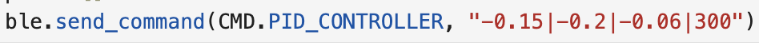
This data is then read on the Artemis Nano and internal global variables are updated respectively. Each gain and the target distance are given values alongside proper data flag setup for PID collection to start at index 0 of its arrays, before filling up and sending the data.
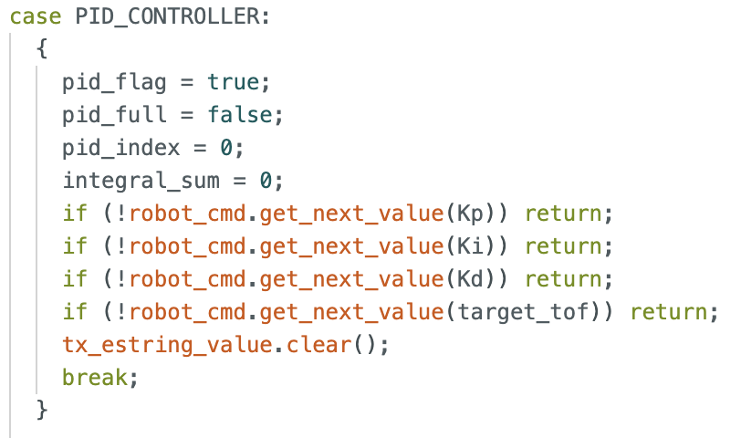
Now that data collection has been turned on the main loop will functionally begin PID control. A dedicated function for PID control is then used to collect a new ToF data point and use both the current sample time and the error between the measurement and the target distance to produce a single input control for the motors. This function originally waited until a new data point was available limiting the speed at which PID control could be implemented.
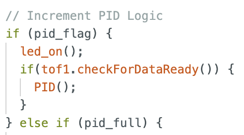
The following code implements the PID logic to update the motor control input with clamped limits in respect to the max input for the PWM motors (255 – correlating to 100% power). Integral gain is also clamped to prevent biasing during early or late periods of minimal movement but in high error.
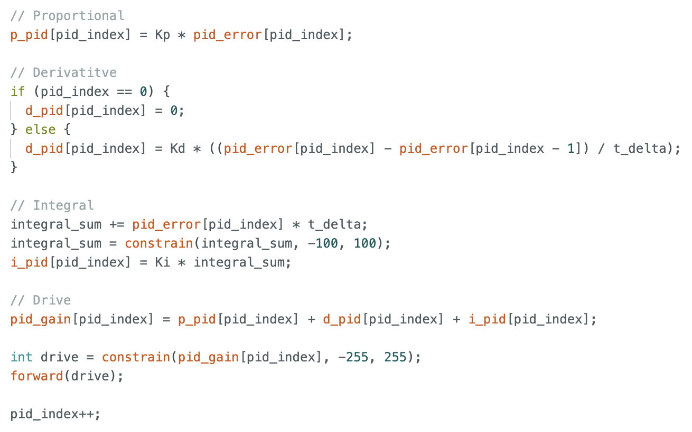
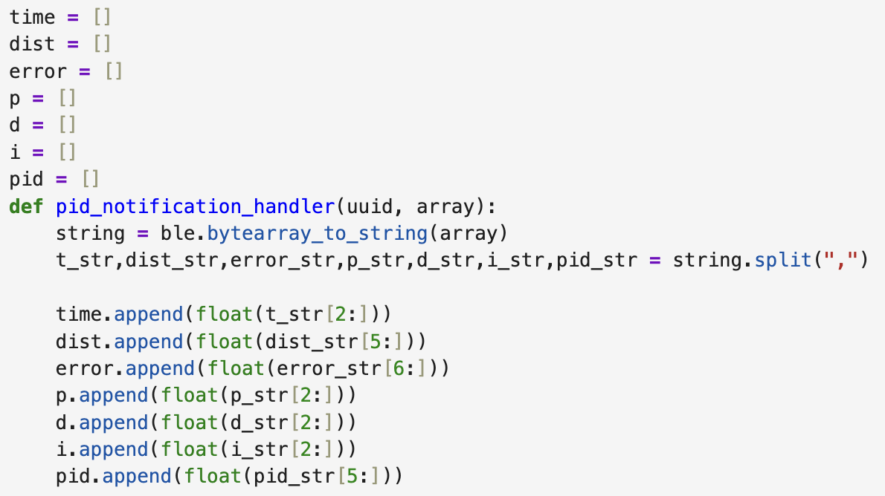
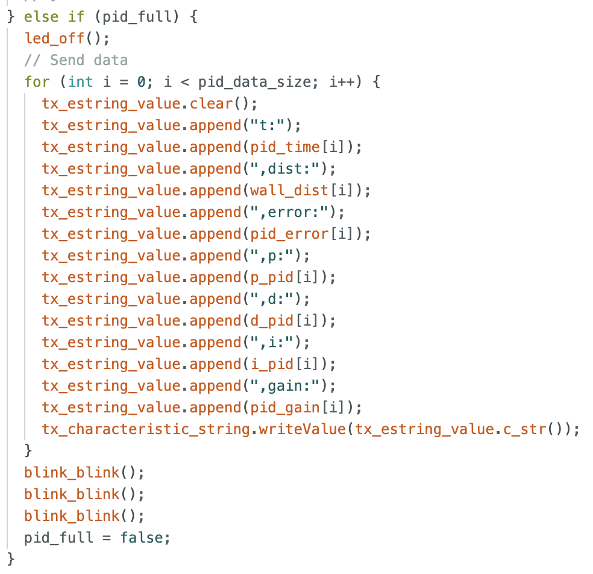
The logged data includes time in milliseconds, distance in millimeters, error in millimeters, each individual PID gain, and the resulting motor controller signal ‘PID gain’. PID gain is the control input to each of the motors and can range from -255 to 255 for maximum backward motion and maximum forward motion. When first implemented I chose a fixed array size of 150 elements alongside the rough 10Hz sampling of the ToF sensor to result in about 15 seconds of PID data. (Note: This was later updated to 500 to accommodate increased sampling rates during desynchronization for about 5 seconds of data.) On the arduino side, sending this bluetooth data is similar to all previous iterations except this occurs in the main loop() function. Once the data flag for full PID data arrays is raised, the TX characteristic string is repeatedly written to for bluetooth transmission.
As described in the lab documentation the PID control should be robust at longer distances thus I chose to initiate my forward facing ToF sensor for long range as opposed to the previous short range. Additionally small tuning to the wheel motor calibration was required where the right wheel is driven at 15% more power to keep the vehicle moving straight as intended.
Lab Tasks
PID Tuning
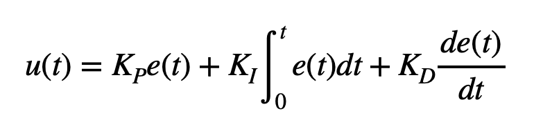
I implemented a full PID controller as described above. In order to begin tuning my controller I first had to think of an appropriate proportional gain term. To do this I thought about it in the following way: When starting the car from 400 mm away with a goal of 300 mm, the initial error that will enter the PID controller is -3700 mm. The corresponding max speed would be a 255 out of 255 duty cycle or 100% motor power. Thus, 255/-3700 = -0.069 would be a reasonable initial proportional gain. When implementing this I found this gain to be a bit too overpowering, resulting in a harsh overshoot while approaching the 300mm goal. Lowering the magnitude closer to -0.04 nearly half of what it was resulted in a positive approach with minimal overshoot and additional correction.
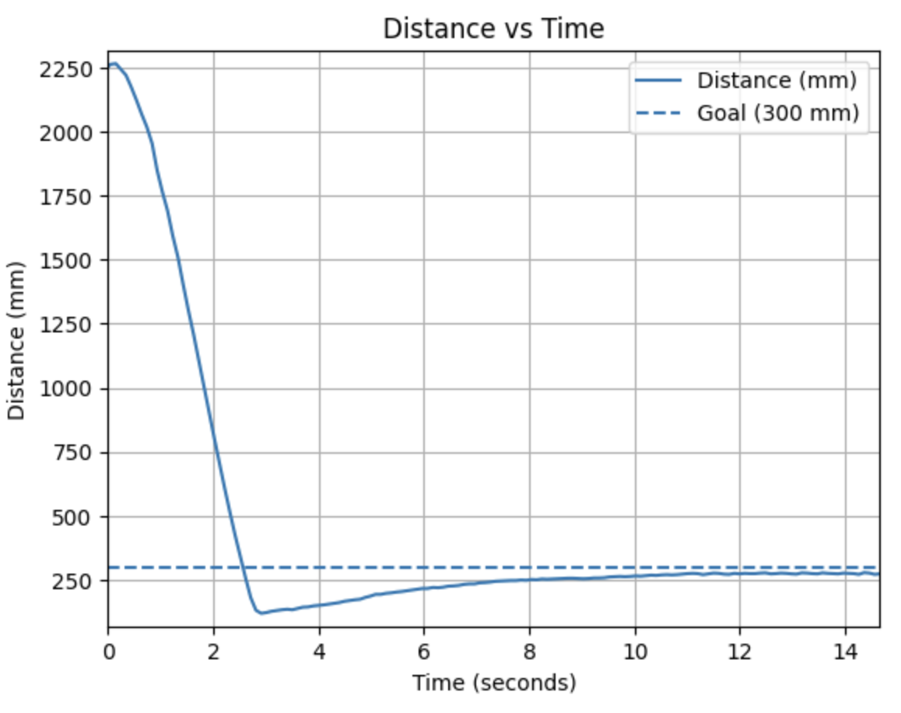
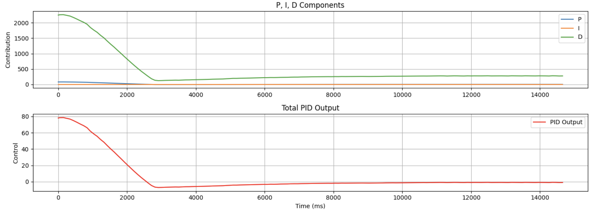
Now to speed up the controller and also implement a dampening or ‘braking’ effect derivative control is added. While the proportional gain tells us how powerfully we should map error to motor power, derivative control tells us how we should respond as the rate we approach the target changes. This means as the robot approaches the target more rapidly, the derivative term will provide a contradicting ‘braking’ subtraction to the motor control input. This directly helped prevent overshoot and allowed for the proportional term to be increased dramatically up to -0.125 for a much faster approach. An derivative gain of -0.04 seemed appropriate for my purposes.
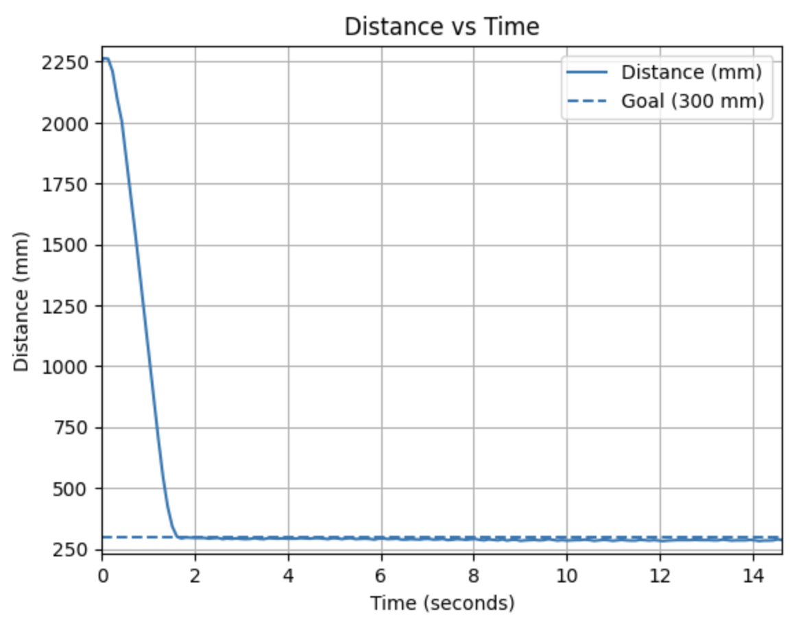
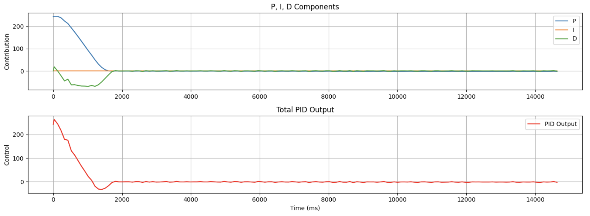
Lastly, depending on the initial starting position and other environmental changes such as the friction constant of the floor there tended to be a error gap between the robot’s final destination and the target distance. In order to compensate for this difference, a small integral term is added to accumulate that small error over time to result in direct motor control towards the correct desired distance. I found that an integral gain of -0.09 was sufficient for a number of diverse conditions.
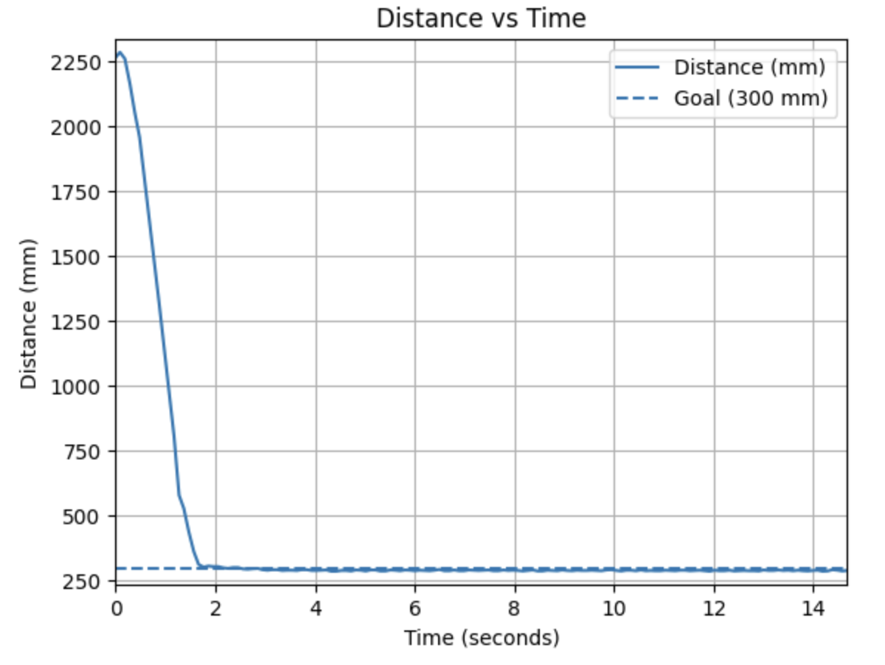
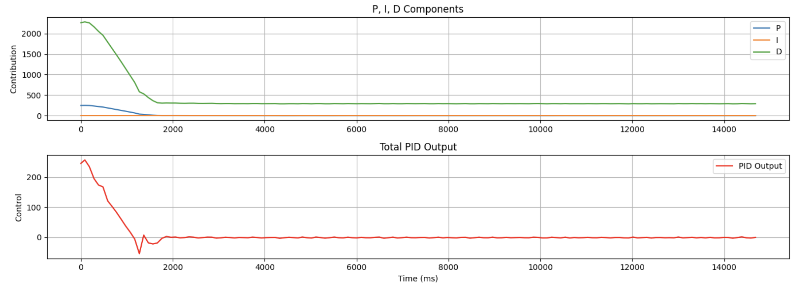
With this tuning I was able to achieve reliable target tracking for both closer ranges ~2m and further ranges ~4m, demonstrating diverse and reliable capabilities.
External Disturbance Response
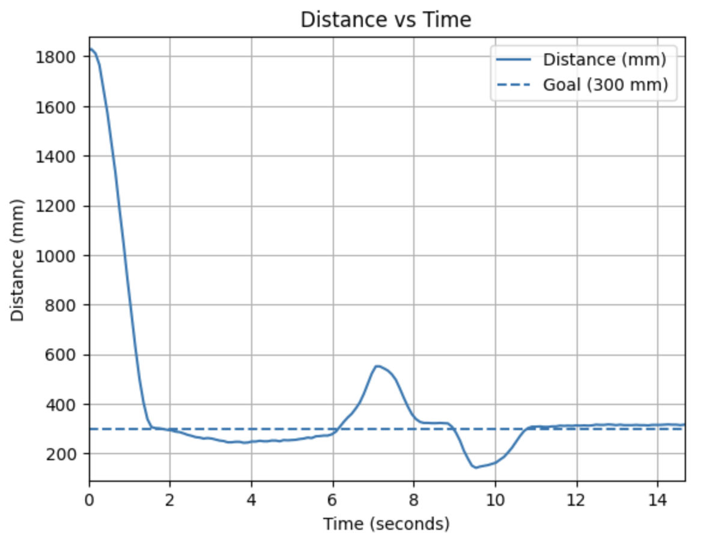
Timing & Synchronization
Given the implementation of my PID controller as described in the Prelab, the PID update only occurs once new ToF sensor data becomes available. Using the data provided below of the recorded time (in ms) between consecutive PID loops, I found that this occurred at the slow rate of 10Hz. With this small sampling speed only about 20 data points are actually being used for real time PID control, given the robot approaches the target in 2 seconds.
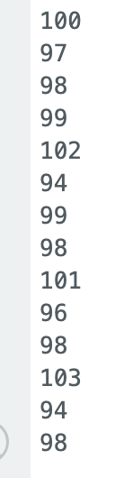
Now to increase the sampling rate of the controller, the PID function will extrapolate using linear predictions and linear rates of change the predicted next distance. Now PID will update each cycle without stalling to wait for a new ToF distance value. When new data does in fact come in, the new linear rate of change is calculated to predict the next distance point yet again.
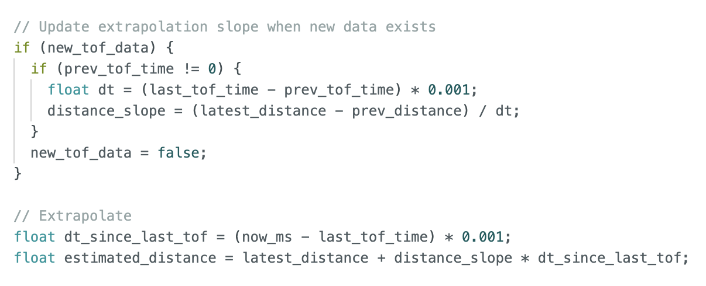
In the same manner I calculated the time difference between consecutive PID and ToF sampling to find their respective sampling rates. While the ToF sampling rate is still close to 10 Hz, the PID sampling rate is now close to 90 Hz and sometimes even 160 Hz. This is an increase of 9 to 16 times, providing much more responsive PID control. With a higher sampling rate the PID array sizes were increased to 500 to account for a total of about 5 seconds of data.
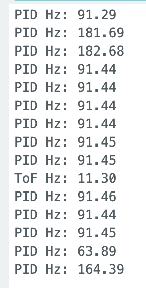
With this more responsive control, I needed to retune the PID gains. This involved increasing the integral gain since there are now many more samples with smaller time deltas.
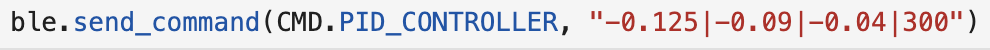
Undoubtedly the asynchronous PID controller possesses much higher resolution resulting in higher responsiveness, stability, and adaptability.
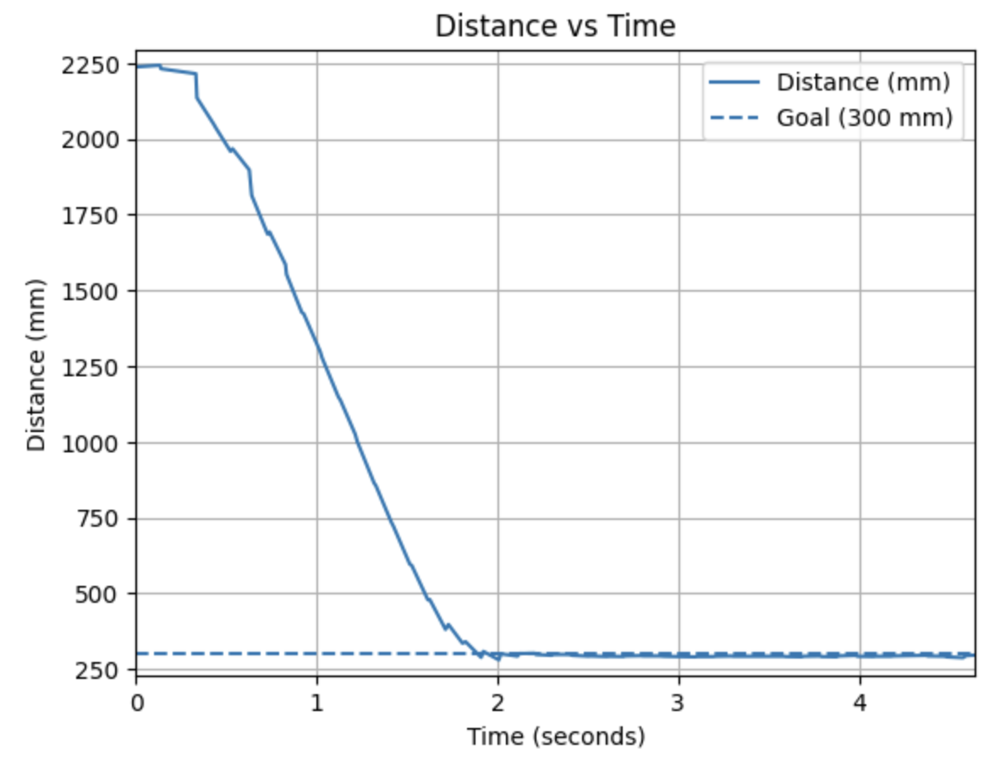
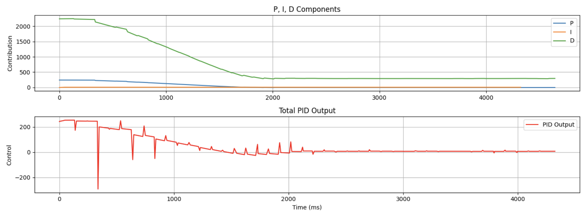
Acknowledgements
I would like to acknowledge the help of course staff for providing me with a new gear shaft for my right wheel motors. One of my wheels had fallen off and upon super glowing this axel back in, the frictional force and unpredictability skyrocketed out of control. Generative AI was used to provide Python graphing software for all of the graphs used in this report.